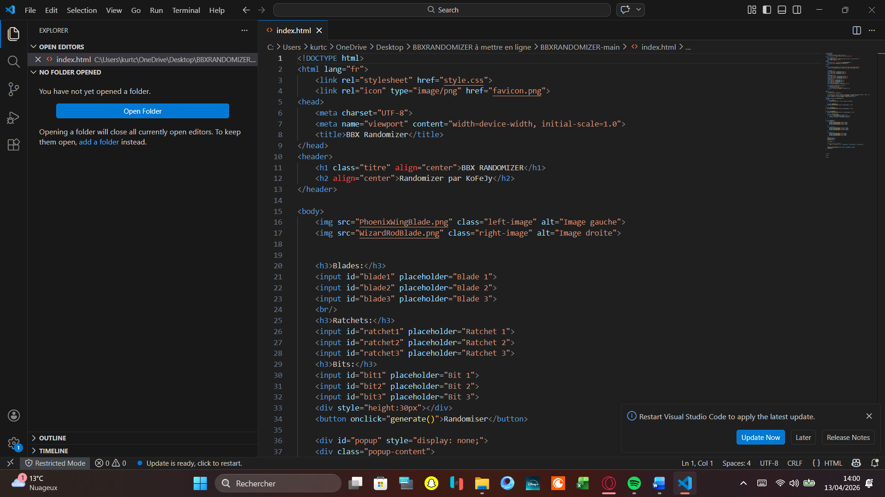
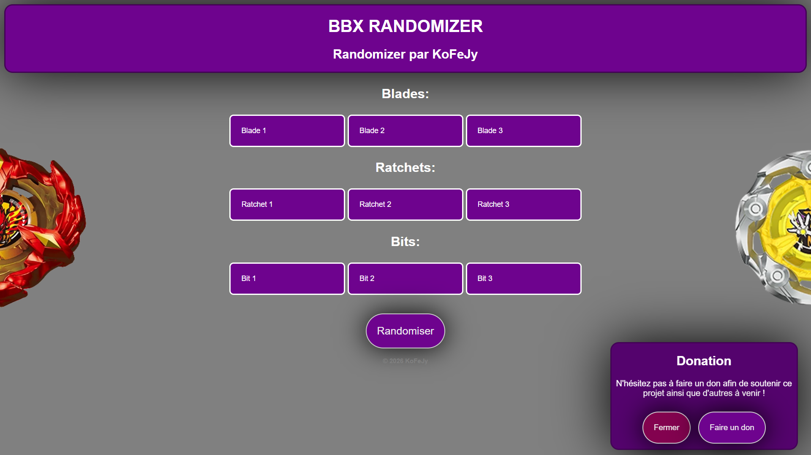
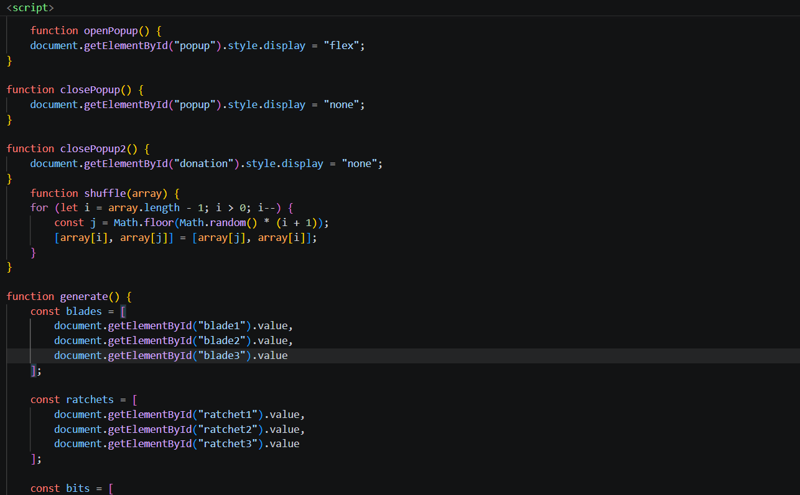
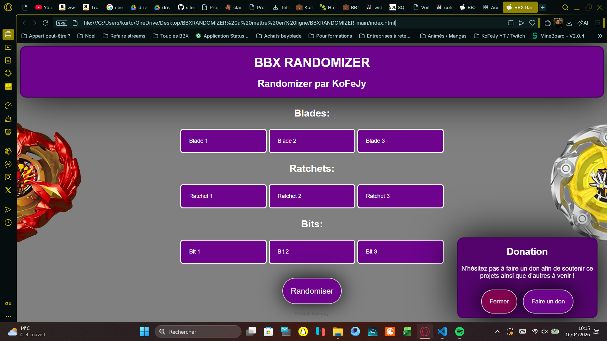
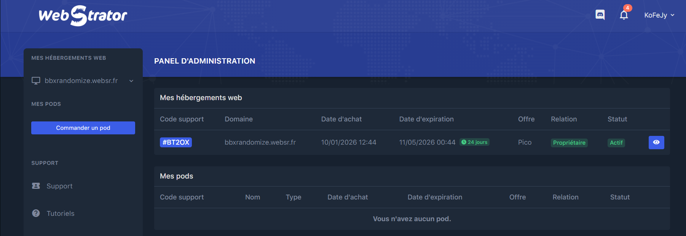
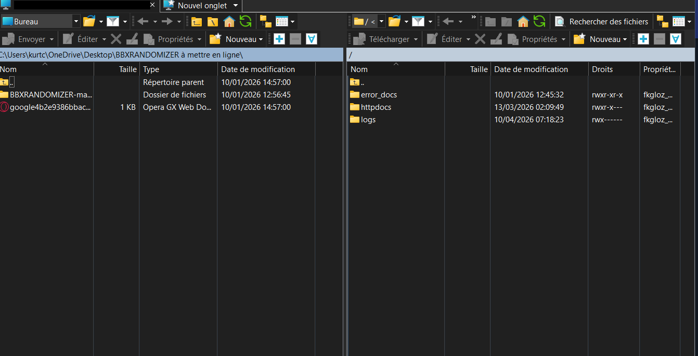
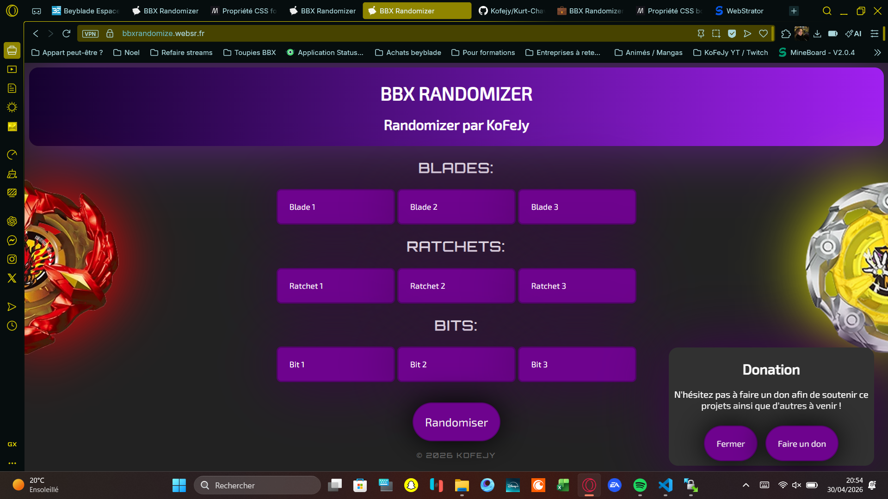

Projet personnel
BBX Randomizer 🎲
Conception et déploiement d'un site web statique permettant de générer aléatoirement des combinaisons de pièces Beyblade X (Blade, Ratchet, Bit).
Voir le site en ligne ↗Contexte & objectifs 🎯
Ce projet est né d'une idée personnelle : créer un outil pratique pour les joueurs de Beyblade X, un jeu de toupies compétitif proposant un grand nombre de pièces combinables entre elles (Blade, Ratchet, Bit). L'objectif était de concevoir un randomizer en ligne capable de générer instantanément une combinaison aléatoire, utile pour découvrir de nouvelles configurations ou s'entraîner avec des contraintes imposées.
Ce projet m'a permis de mettre en pratique les compétences en développement web front-end acquises durant ma formation BTS SIO : structuration HTML, mise en forme CSS et logique JavaScript. Il a également été l'occasion de me familiariser avec le déploiement d'un site sur un hébergement mutualisé, de la configuration FTP jusqu'à la mise en ligne.
Objectifs du projet
- ➜ Concevoir un outil web permettant de générer aléatoirement des combinaisons de pièces Beyblade X
- ➜ Structurer la page en HTML sémantique et la styliser en CSS responsive
- ➜ Développer la logique de randomisation en JavaScript pur (sans framework)
- ➜ Tester le comportement du site sur différentes résolutions via les DevTools
- ➜ Déployer le site sur un hébergement mutualisé via FTP et vérifier la mise en ligne
Conception & déploiement 📋
Analyse du besoin et maquettage
Définition des fonctionnalités attendues : affichage des pièces disponibles par catégorie (Blades, Ratchets, Bits), bouton de randomisation, affichage du résultat avec les images correspondantes, et possibilité de fermer ou relancer un tirage. Réalisation d'une maquette simple avant de passer au développement.
Structure HTML de la page
Création du fichier index.html avec la structure de base : en-tête avec
le titre et les images de présentation, sections listant les pièces disponibles
par catégorie, bouton de randomisation et zone d'affichage du résultat.
Respect des bonnes pratiques de sémantique HTML.

Mise en forme CSS
Stylisation de la page : mise en page centrée, choix des couleurs et typographies, adaptation responsive pour une utilisation confortable sur ordinateur et mobile. Intégration des images des pièces Beyblade X en regard du contenu.

Logique JavaScript – le moteur de randomisation
Développement de la logique de tirage aléatoire : récupération des listes de pièces
définies dans le HTML, sélection aléatoire via Math.random() dans chaque
catégorie (Blade, Ratchet, Bit), puis affichage dynamique du résultat.
Gestion des événements sur les boutons Randomiser et Fermer.

Tests en local
Vérification du bon fonctionnement avant mise en ligne : test du tirage sur les trois
catégories, vérification de l'affichage des images, test sur différentes résolutions
via les outils développeur du navigateur (F12 → DevTools),
et correction des bugs identifiés.

Configuration de l'hébergement mutualisé
Création d'un compte sur la plateforme websr.fr et enregistrement
du sous-domaine bbxrandomize.websr.fr. Configuration du répertoire
racine de publication et récupération des identifiants FTP fournis par l'hébergeur
pour le transfert des fichiers.

Transfert des fichiers via FTP
Envoi des fichiers du site (index.html, CSS, JavaScript et images)
sur le serveur distant via le client FTP FileZilla.
Vérification que l'arborescence est correcte côté serveur et que
index.html est bien placé à la racine du répertoire de publication.

Vérification en ligne et mise en production
Accès au site via https://bbxrandomize.websr.fr pour vérifier que
l'ensemble des fichiers est correctement servi : affichage des images, fonctionnement
du randomizer, rendu sur mobile. Vérification que le certificat
SSL/HTTPS est bien actif sur le sous-domaine.

Bilan ✅
Ce projet m'a permis de consolider mes compétences en développement web front-end dans un cadre concret et personnel. De la conception à la mise en ligne, j'ai géré l'intégralité du cycle de vie d'un projet web : analyse du besoin, développement, tests et déploiement.
La contrainte d'un site entièrement statique m'a amené à réfléchir à la meilleure manière de structurer les données directement dans le HTML et de piloter l'affichage uniquement via JavaScript. Le site est aujourd'hui accessible en ligne à l'adresse bbxrandomize.websr.fr ↗ .